Was ist AGI?
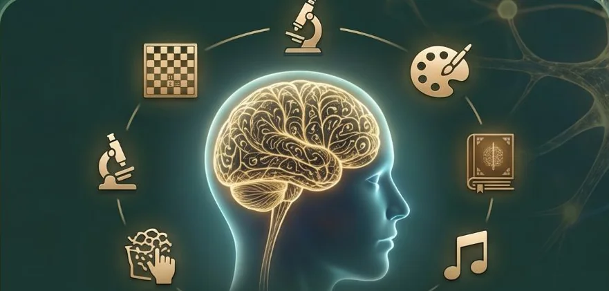
AGI ist eine KI, die jede menschliche Denkaufgabe bewältigen kann.
Die Zukunft der Softwareentwicklung
Dr. Blasius Lofi Dewanto
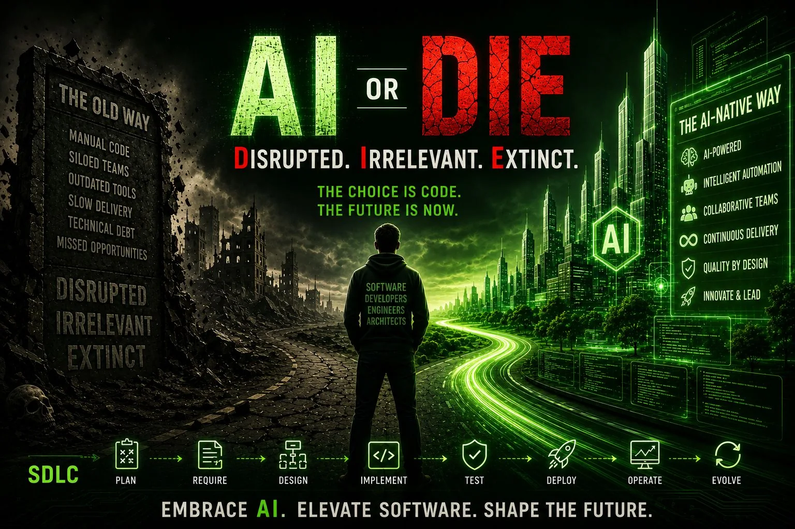
The choice is code.
The future is now.
Embrace AI.
Elevate software.
Shape the future.
LLMs, AGI und das Mental-Modell für KI-Agenten
Ein Large Language Model (LLM) ist ein Computerprogramm, das aus riesigen Mengen von Texten lernt, sodass es menschliche Sprache verstehen und menschenähnliche Texte erzeugen kann.
Ein schlauer Papagei zur Textvorhersage, der mit Unmengen an Texten trainiert wurde.
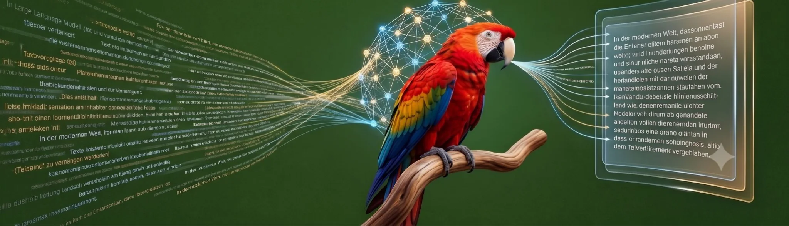
Artificial General Intelligence

AGI ist eine KI, die jede menschliche Denkaufgabe bewältigen kann.
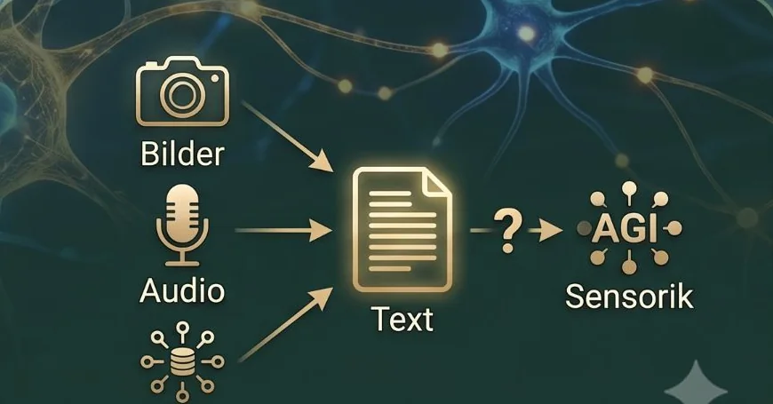
Benötigt AGI mehr als nur Text?
Vor der Nutzung sollte man wissen, wie das LLM entsteht.
„Deep Dive into LLMs“ von Andrej Karpathy
Video ansehen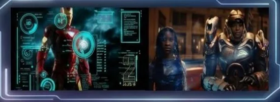
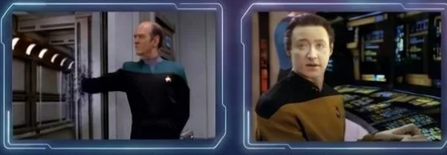
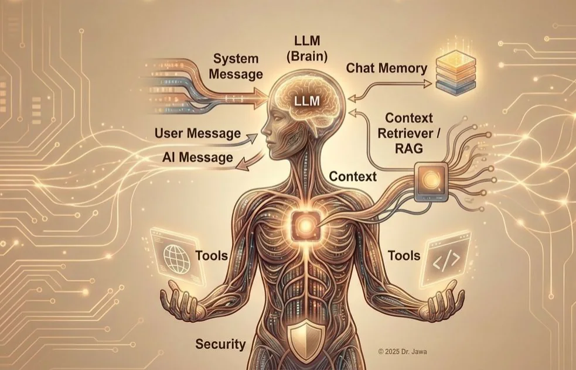
Was als Text vorhanden ist, kann man vom Agenten jederzeit bearbeiten lassen.
Und … eigentlich ist alles Text, was wir machen.
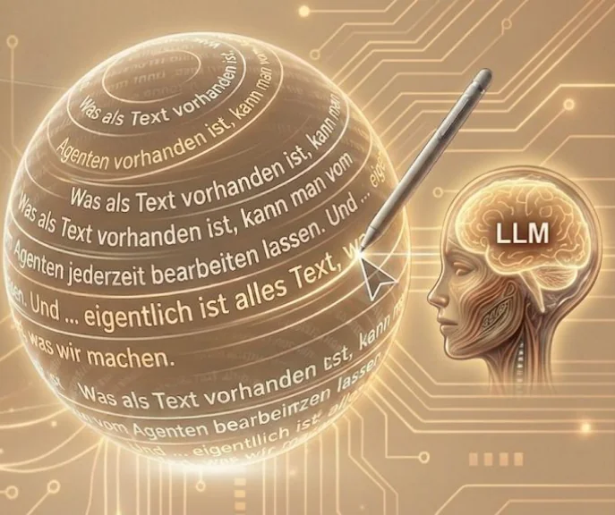
Vom Imperativen zum Deskriptiven, Specification-Driven Development
Imperativ vs. Deskriptiv
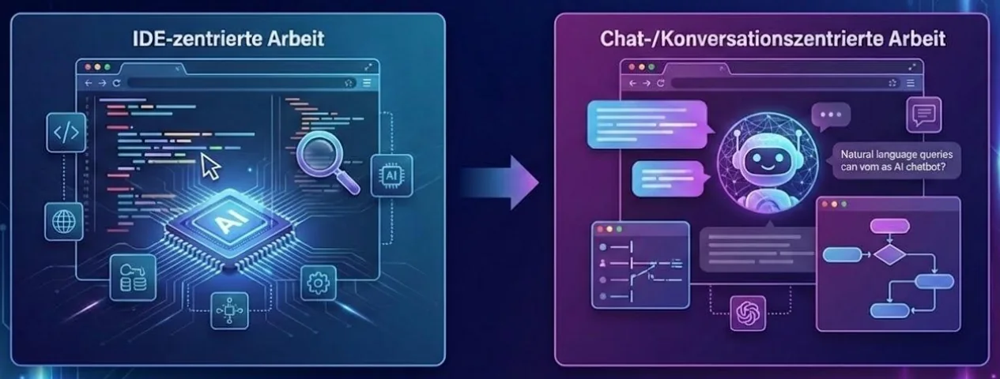
Anforderungen, Motivation, technische Rahmenbedingungen & Constraints festlegen.
Architektur und technische Strategie definieren: Welche Technologien, welche Schnittstellen, welche Patterns, wie integriert das Ganze?
Den Plan in kleine, umsetzbare Arbeitspakete unterteilen, sodass jedes Teil isoliert getestet oder reviewt werden kann.
Die KI-Agenten oder Entwickler beginnen mit der Umsetzung und halten sich strikt an Spezifikationen und Tasks.
github.blog: Spec-driven development with AI · github.com/github/spec-kit
Eine Einführung für Anfänger
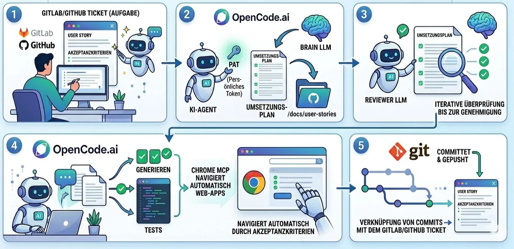
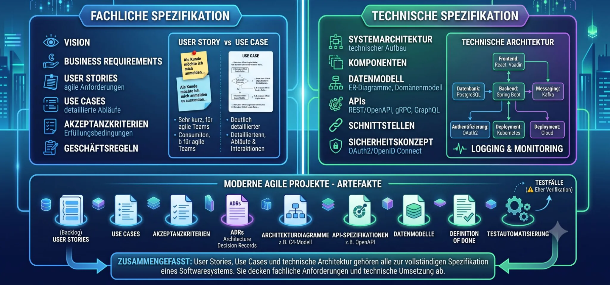
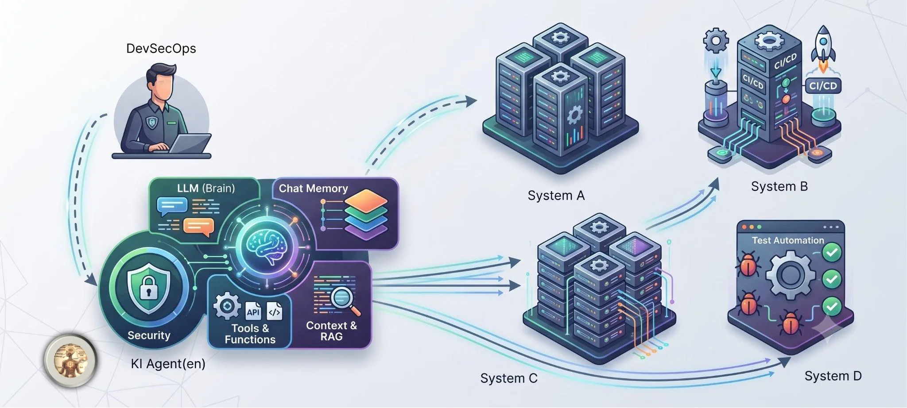
Specification-Driven Development
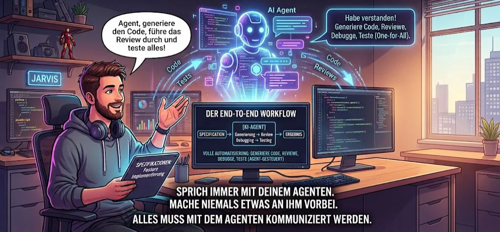
KI-Agenten können alles tun, wozu wir befugt sind – logisch.
Daten löschen, Systeme verändern.
Anwendungen herunterladen, installieren.
… praktisch alle Systemoperationen durchführen!
Wenn das nicht gewünscht ist, müssen ihre Rechte entsprechend eingeschränkt werden.
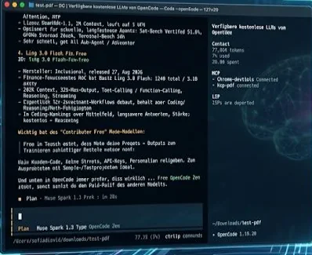
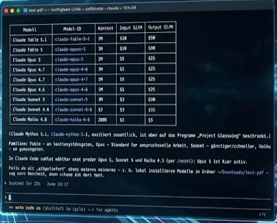
KI-gestützte Softwareentwicklung
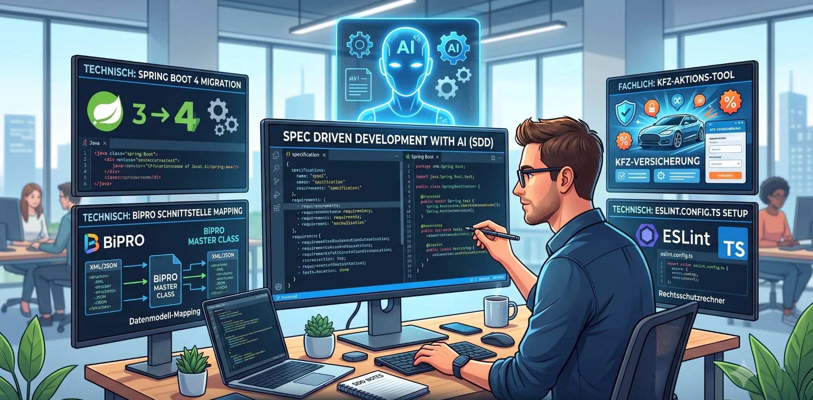
DevSecOps, Product Builder und die harte Umstellung
DevSecOps, Internal Developer Platforms und Agilität bleiben unverändert …
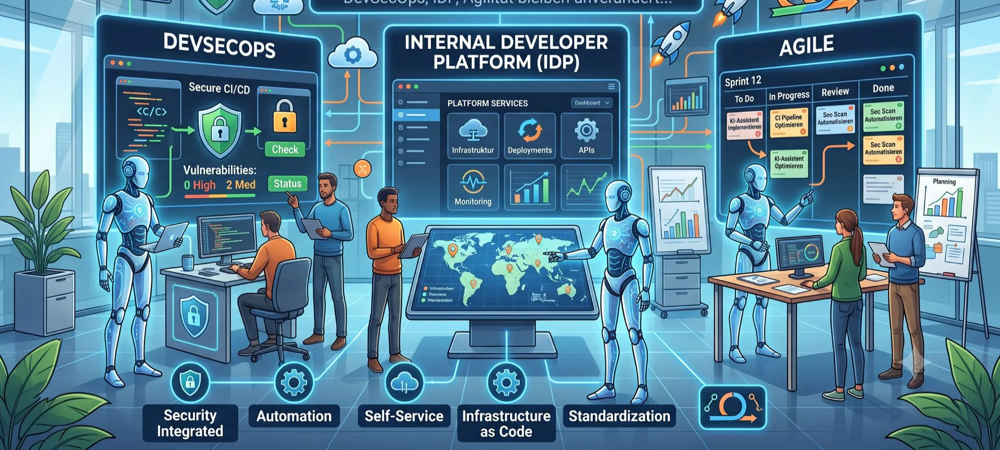
IT & Tech · IT
(Business Analyst, DevSecOps, Tester) · Microteams: drei Personen pro Team?
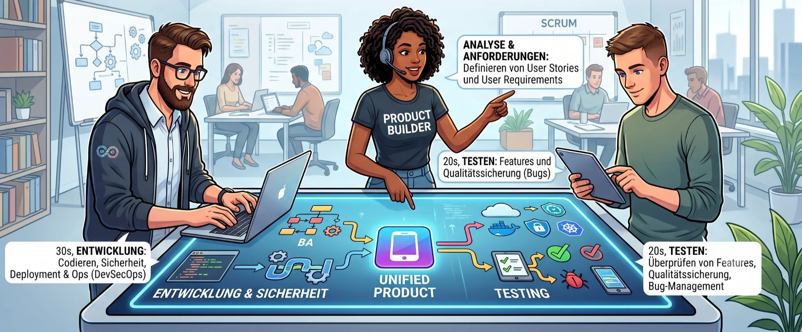
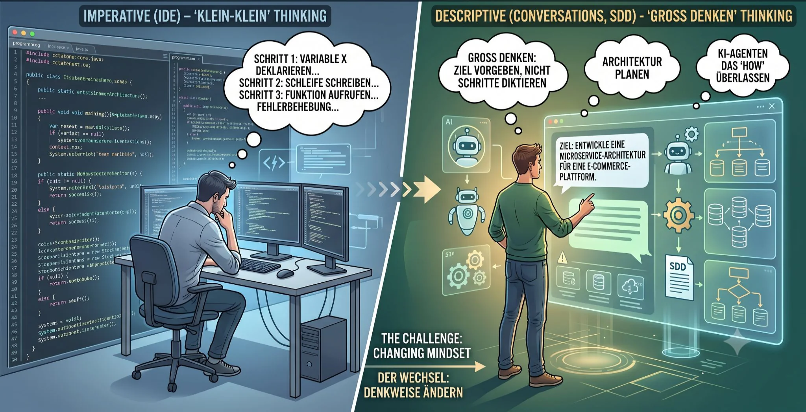
TOE-Framework und Kontakt
Technology, Organization, Environment
Don’t DIE or at least … DIE Hard